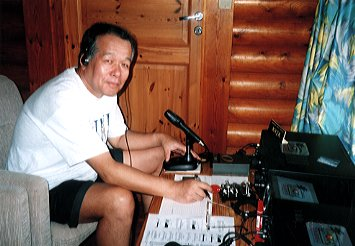
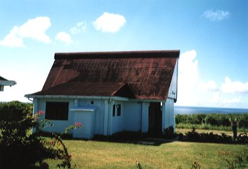
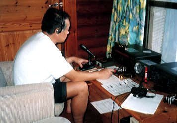
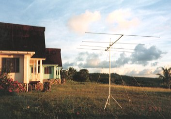
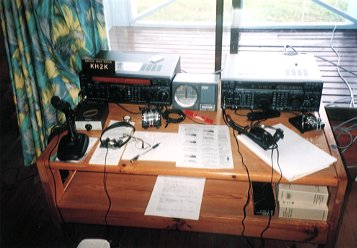
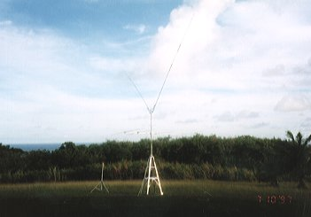

KH2K/AH0、サイパン島から運用

SAIPAN
(1997 JUL.8〜11)

KH2K/AH0を運用中のJA1RJU
SAIPAN

|
【運用の目的】
7月8日から7月11日の日程(旅行日を含む)でサイパン島からのDX-PEDIの計画が急遽決まり、
今回の運用となりました。
 運用に使用したコテージの全景（JA方向を望む）
【KH2K/AH0の運用報告】
予定では7月9日午前中にはオンエア出来るはずでしたが、7月8日夜発のサイパン行きのフライトが出発直前にキャンセルされ、
一晩成田で足止めされてしまいました。結局、翌日朝の代替えのJAL便に変更して出発。
JA1 18 JA7 1
JA2 13 JA8 8
JA4 1 JA0 2
途中、QSBで信号が聞こえなくなるときもありましたが、比較的JAの信号は強力。
呼ばれなくなってもJA2IGYのビーコンは聞こえていましたので、バンドは連続してオープンしていたものと思われます。
オープン時間のわりに局数が少なかったのは平日の日中のためだったでしょう。オープン開始直後、同じ50.110MHzでグアム(Guam)のKH2Dがダブッて出て来ました。 アンテナを向けるとKH2Dの信号はサイパンでも確認出来ましたがQSOは出来ませんでした。
HF帯は夜間の7、14MHzで北米、ヨーロッパを中心に約218局とQSO出来ました。
同行したKH0/JN1WTKとHF帯で2局同時運用しましたが、相互にトラブル無く楽しめました。
  KH2K/AH0を運用中のJA1RJU（写真左）と6m4EL（HB9CV） 運用場所は眼下にSaipanの海岸線を望む高台のコテージ
【50MHzのQSO局】
7月10日 （オープン時間 05:37〜08:26Z） JH0HZO(CW) JL1IHE(SSB) JK1TQS(SSB) JA8EJH(SSB) JE1HLR(CW) JN1BPM(CW) JA1WUN(SSB) JR2UXO(SSB) JA8TMP(CW) JA2FGL(CW) JI1VDB(SSB) JS1OHS(SSB) JA2MJO(SSB) JA8RVP(CW) JI1UHZ(SSB) JH0HZO(SSB) JG2AJK(SSB) JA1CZI(CW) JH8HWL(SSB) JJ3AZA/1(CW) JF2TAR(SSB) JF2TAR(CW) JH4IUO(CW) JA1EJD(CW) JF2EEK(SSB) JN1BPM(SSB) JA8RJE(CW) JI1UHZ(CW) JG2AJK(CW) JA2EPK(CW) JA8CAR(SSB) JI1UHZ(SSB) JR2HCB(CW) JI1UHZ(SSB) JH7LLE(SSB) JR2HCB(SSB) JR2UXO(CW) JG2BRI(SSB) JH1HHC(CW) JK1DVX(SSB) JK1DVX(CW) JA8QX(SSB) JR8MCR(CW)   RIGはFT-920（左）とFT-1000MP 6mのアンテナは4エレHB9CV、HFはＶ型ダイポールとGP（CP-6）
|